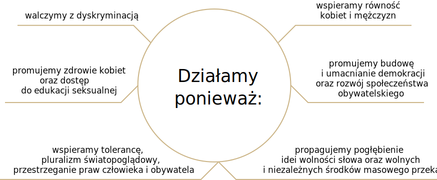
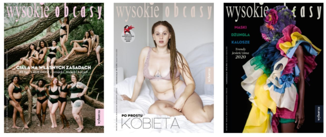

Fundacja Wysokich Obcasów powstała w 2018 roku z głębokiej potrzeby tworzenia projektów oraz inicjatyw społecznych, które wyrażają misję i zaangażowanie społeczne magazynu Wysokie Obcasy.
Powołaliśmy do życia Fundację “Wysokich Obcasów”, bo wierzymy, że można zmienić świat na lepszy – bardziej demokratyczny, równy, siostrzeński i braterski. Wystarczy, że każdy z nas postara się zrobić najlepiej to, co potrafi. My swoją dziennikarską pracą docieramy do milionów ludzi, przekonując, że warunkiem istnienia społeczeństwa obywatelskiego jest niezgoda na wykluczenia i dyskryminację. To Państwo, nasze Czytelniczki i Czytelnicy, dają nam siłę, odwagę, od Was uczymy się wrażliwości. „Wysokie Obcasy” i Fundacja “Wysokich Obcasów” są jak Wy.
Aleksandra Klich-Siewiorek
Prezeska Zarządu Fundacji
Redaktorka Naczelna “Wysokich Obcasów”
Działalność pro bono najważniejszego magazynu opiniotwórczego dla kobiet w Polsce.
Fundacja jest jedną z czołowych polskich organizacji wspierających kobiety i mniejszości w Polsce. Działamy przy największej gazecie w kraju, dzięki czemu nasze projekty mają najszersze w Polsce przełożenie społeczne. Im dalej od największych miast kraju, tym więcej kobiet potrzebuje wsparcia. My tam jesteśmy codziennie. Budujemy projekty dla kobiet i mniejszości w miastach i w Polsce lokalnej.
Nasze projekty mają realne przełożenie społeczne.
Fundacja jest jedną z czołowych polskich organizacji wspierających kobiety i mniejszości w Polsce. Działamy przy największej gazecie w kraju, dzięki czemu nasze projekty mają najszersze w Polsce przełożenie społeczne. Im dalej od największych miast kraju, tym więcej kobiet potrzebuje wsparcia. My tam jesteśmy codziennie. Budujemy projekty dla kobiet i mniejszości w miastach i w Polsce lokalnej.
Wspieramy społeczeństwo oparte na otwartości i tolerancji.
Tygodnik „Wysokie Obcasy” i serwis wysokieobcasy.pl są częścią Gazety Wyborczej, największej opiniotwórczej gazety w Polsce. Misją gazety jest promowanie wartości demokratycznych oraz inicjowanie ważnych kampanii społecznych.

Jesteśmy częścią największej polskiej gazety.
T Wyborcza i Wysokie Obcasy posiadają 260.000 subskrybentów cyfrowych oraz 9.8 miliona użytkowników serwisu wyborcza.pl a także jako jedyna gazeta w Polsce ma lokalne redakcje na terenie całego kraju.
Wysokie Obcasy skupiają społecznie zaangażowane, świadome czytelniczki.
Czytelniczki Wysokich Obcasów to przede wszystkim kobiety powyżej 40 r.ż. Są bardzo dobrze wykształcone mieszkanki dużych i średnich miast 100 tys.+. Są aktywne zawodowo i zamożne — mają stabilną sytuację zawodową i materialną. Najczęściej ze wszystkich czytelniczek prasy kobiecej. Są otwarte na innych, interesuje je świat, nie tylko w lukrowanej wersji.
Użytkownicy wysokieobcasy.pl: 67% użytkowników serwisu to kobiety. Są młodsze od czytelniczek magazynu — większość użytkowniczek jest w wieku 25-49 r.ż., ale podobnie jak one są wszechstronnie wykształcone. W odróżnieniu od czytelniczek magazynu są mieszkankami nie tylko dużych miast, ale również i mniejszych miejscowości, pow. 20 tys. mieszkańców. Na serwisie szukają bieżących informacji, poczucia wspólnoty i inspiracji. Cenią go za treści lifestyle’owe i kontent związany z życiem zawodowym.